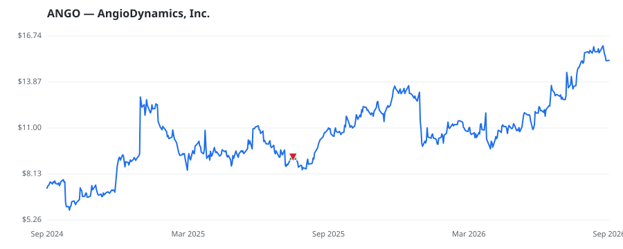

bullish · bearish · n/a — dots: price>SMA10 · SMA10>SMA50 · SMA50>SMA200 · up>down volume (20d)
Health Care Equipment & Services · small cap · ★ 1 buyer(s) sit on a committee that regulates this industry
Members who bought ANGO earned a dollar-weighted +0.0% from their disclosure dates, versus +0.0% for the S&P 500 over the same holding windows (+0.0% alpha).

▲ green = a disclosed purchase · ▼ red = a disclosed sale (plotted on disclosure date)
AngioDynamics Inc designs manufactures, and sells medical, surgical, and diagnostic devices used by professional healthcare providers for the treatment of peripheral vascular disease and for use in oncology and surgical settings. Geographically, the company derives a majority of its revenue from the United States from sale of Med Tech and Med Device. SURGICAL & MEDICAL INSTRUMENTS & APPARATUS · website
| Revenue | $292.5M | Net income | $-34.0M |
|---|---|---|---|
| Operating income | $-40.0M | Diluted EPS | $-0.83 |
| Assets | $280.1M | Equity | $183.0M |
| Member | Chamber | Out-performer | Disclosed buys $ | Return on buys |
|---|---|---|---|---|
| Debbie Wasserman Schultz ★ | house | yes | $8K | +0.0% |
Disclosed $ figures are bracket midpoints — filings report ranges (e.g. $1,001–$15,000), not exact amounts.
This name produced 0.0% of the ranked funds’ total alpha.
| Fund | Fund alpha vs SPY | Position | % of book |
|---|---|---|---|
| STONERIDGE INVESTMENT PARTNERS LLC | +8% | $0M | 0.1% |
Hedge data: SEC EDGAR 13F · ranked funds beat SPY in >50% of their quarters · fund alpha = mirror-portfolio return minus SPY.